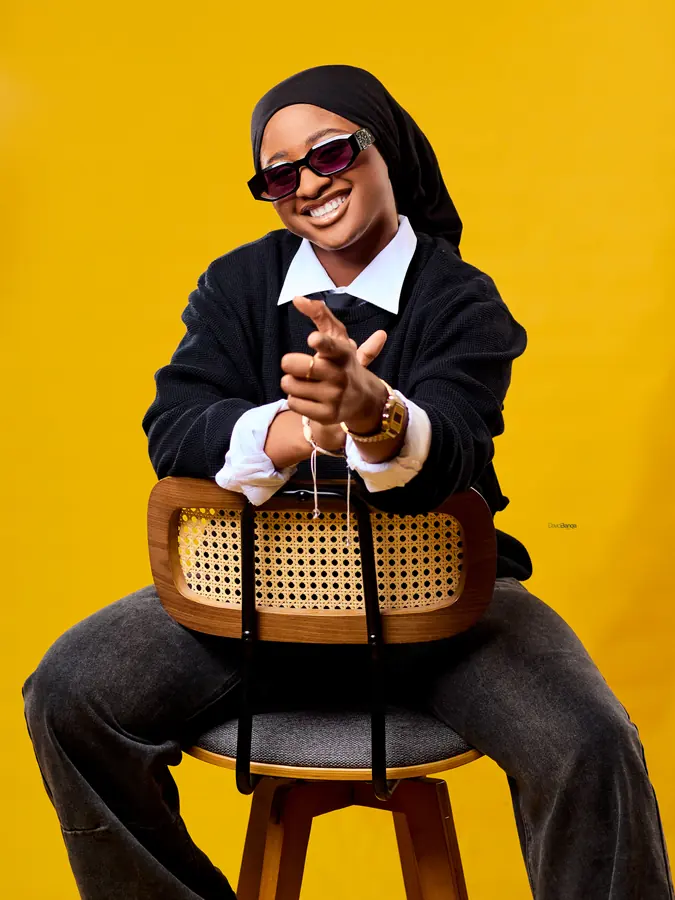
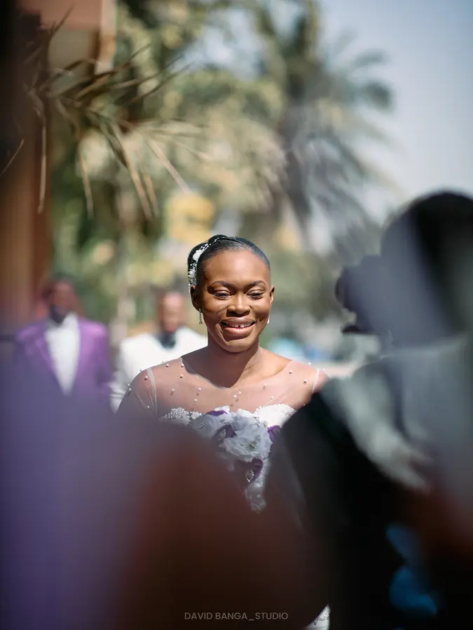
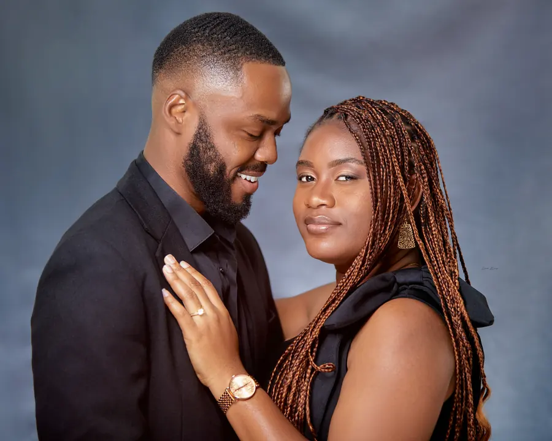
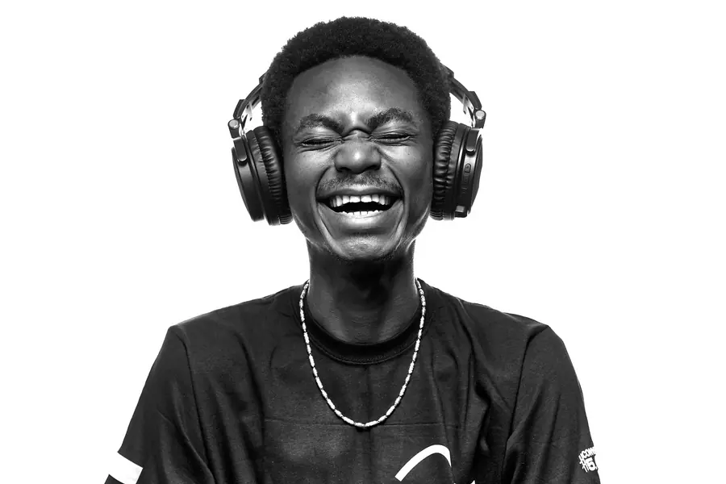
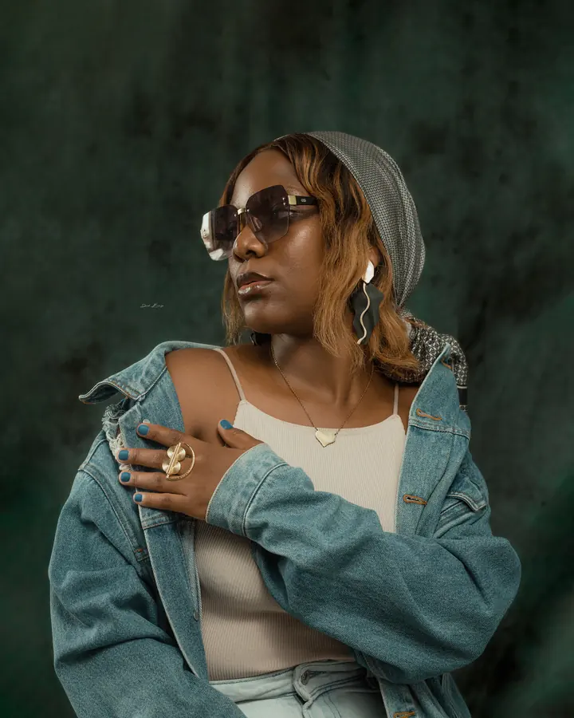
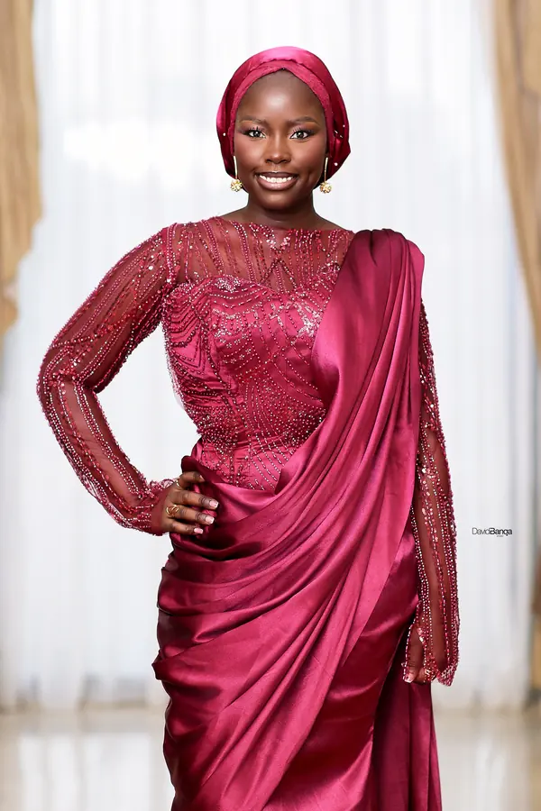
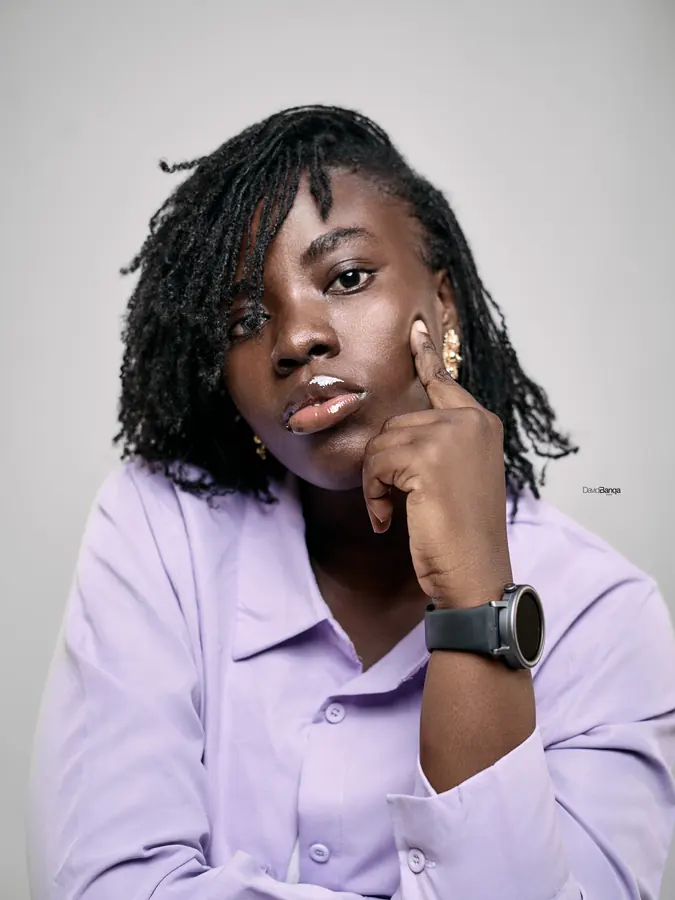
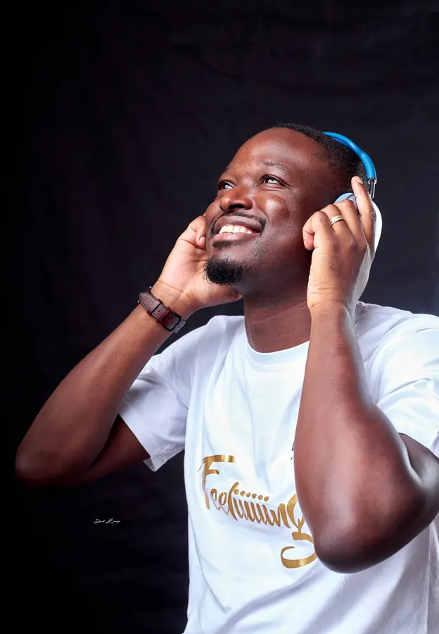

Séances photo en studio
Portraits individuels, couples, familles et maternité. Lumière et fond maîtrisés pour un rendu soigné.








Réalisations — 30 images
Une sélection de portraits, de séances studio et de reportages. Choisissez une série pour filtrer la galerie, puis touchez une image pour l'agrandir.
Chaque photo raconte une histoire unique.
— David Banga
À propos
Huit années derrière l'objectif, avec un sens du détail au service de moments authentiques et spontanés.
Photographe professionnel, David découvre la photographie dès ses premières années universitaires. Au fil des années, il perfectionne son art grâce à de nombreuses collaborations enrichissantes et à des formations auprès de certains devanciers.
Il est convaincu que chaque photo raconte une histoire unique. Son objectif cherche donc à refléter la personnalité et les émotions de chacun de ses sujets.
Son équipement professionnel, avec des objectifs variés, lui permet de s'adapter à toutes les conditions de prise de vue. Adepte de la retouche numérique, il sublime ses clichés tout en restant réaliste et conservateur.
Services
Du studio au terrain, chaque prestation est pensée pour raconter votre histoire avec justesse.
Portraits individuels, couples, familles et maternité. Lumière et fond maîtrisés pour un rendu soigné.
Photos corporate pour dirigeants, équipes et profils en ligne. Une image juste, à votre image.
Couverture d'entreprises, d'institutions, d'hôtels et de restaurants pour vos supports de communication.
Mariages, cérémonies, soirées et événements d'entreprise. Les instants forts, sans mise en scène.
Retouche numérique réaliste et conservatrice, et création de supports graphiques pour prolonger vos images.
Un besoin particulier ? Décrivez votre projet sur WhatsApp et recevez une proposition adaptée.
Écrire sur WhatsAppPortfolios PDF
Deux e-books à consulter en ligne ou à partager avec votre équipe.
Le book de référence : portraits, studio, corporate et événements.
Ouvrir le PDF ↗Établissements, ambiances et plats mis en valeur pour l'hôtellerie et la restauration.
Ouvrir le PDF ↗